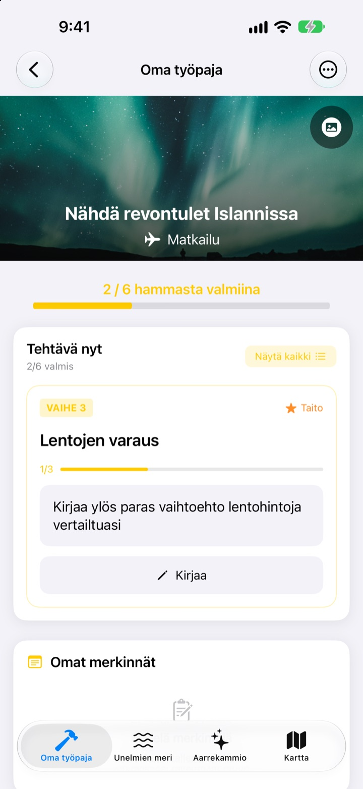
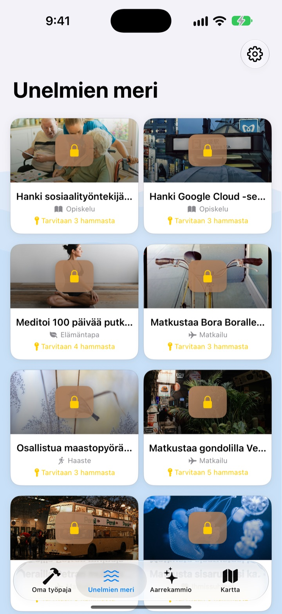
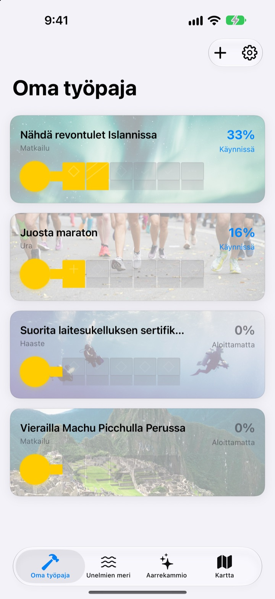
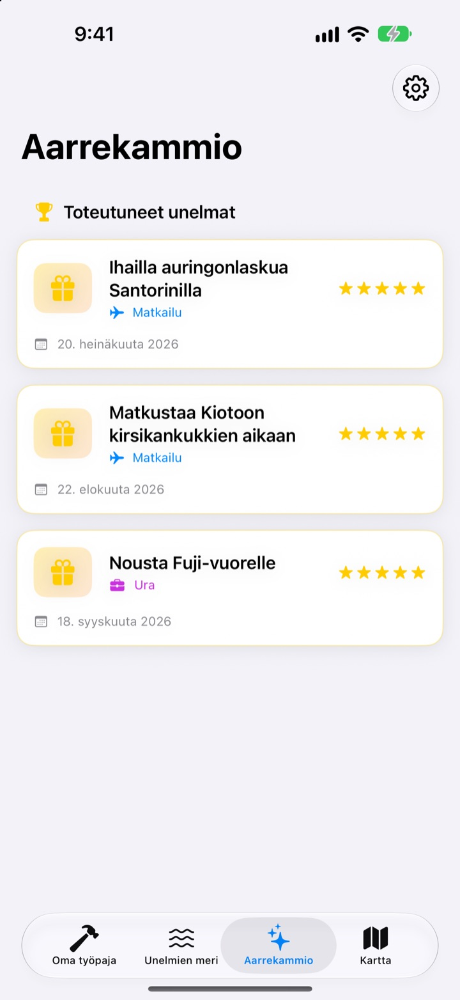

Älä vain kirjoita
unelmiasi ylös
Valitse unelma, niin pienistä askelista sitä kohti tulee avaimen hampaat. Vastaa päivän askeleeseen kysymys kerrallaan, ja ennen kuin huomaatkaan, arkku on auki.
Osta kerran, niin kaikki ominaisuudet ovat käytössäsi. Ei tilausta, ei mainoksia.

Viimeistele avain
Unelmasta nähdä revontulet Islannissa puuttuu kaksi askelta. Vastaa jokaiseen kysymykseen yhdellä rivillä (tai jätä tyhjäksi) ja napauta Seuraava. Jokainen valmis askel täyttää hampaan, ja täysi avain avaa arkun.
Oletko kirjoittanut unelmalistan ja unohtanut sen?
”Nähdä revontulet” on niin iso asia, ettei tiedä mistä aloittaa, joten se jää listalle vuosiksi. Dream Seeker jakaa unelman askeliin, jotka voit ottaa jo tänään, kuten selvittää sesongin, säästää rahaa ja varata lennot, ja näyttää vain sen yhden, joka on nyt vuorossa.
Valitse yli 590 unelmasta
Matkat, elämykset, saavutukset, terveys, oppiminen ja ihmissuhteet. Kuuden alueen unelmat ajelehtivat arkuissa Unelmien merellä. Tuo mieluisa omaan työpajaan, ja askeleet on jo jaettu valmiiksi.
Eikö omaasi löydy? Tee se itse: otsikko, alue ja tarvittavat askeleet.

Hammas kerrallaan, juuri sen verran kuin tänään
Omassa työpajassa näet heti, kuinka pitkällä kunkin unelman avain on. Nyt vuorossa oleva askel on ylimpänä, ja kun vastaat sen kysymyksiin, yksi hammas täyttyy.
Vastaukset ja kuvat kertyvät Omiin merkintöihin, ja edistymisen aikajanalta näet koko kuljetun matkan.

Toteutuneet unelmat aarrekammioon, paikat kartalle
Täytä kaikki hampaat ja avaa arkku. Toteutuneet unelmat kertyvät päivämäärineen aarrekammioon, ja tauolla olevat unelmat odottavat siellä, kunnes jatkat.
Paikkaan liittyvät unelmat näkyvät kartalla, joten näet kaikki paikat, joihin haluat mennä.

Aloita kolmella askeleella
- 1
Valitse unelma
Napauta arkkua Unelmien merellä ja valitse Tuo työpajaan.
- 2
Vastaa päivän askeleeseen
Vastaa ylimmän askeleen kysymyksiin yksi kerrallaan, niin hammas täyttyy.
- 3
Avaa arkku
Kun kaikki hampaat ovat täynnä, avain on valmis ja arkku aukeaa.
Unelmien meren kuusi aluetta
- Matkailu
- Nähdä revontulet Islannissa · Ihailla auringonlaskua Santorinilla
- Kokemus
- Laskuvarjohyppää tandemina · Kokeile riippuliitoa
- Saavutus
- Juosta maraton · Vaella Everestin base campille
- Terveys
- Tee 20 leuanvetoa · Hanki näkyvät vatsalihakset
- Oppiminen
- Opi puhumaan englantia sujuvasti · Opi puhumaan ranskaa sujuvasti
- Ihmissuhteet
- Matkusta maailmaa vanhempiesi kanssa · Asu kuukausi Jejulla ystävien kanssa
Jokaisella alueella on lähes sata unelmaa. Omat unelmat teet Omassa työpajassa kohdasta Lisää uusi unelma.
Yksi osto, kaikki mukana
Sovellus
- Yli 590 unelmaa ja kysymykset jokaiseen askeleeseen
- Omat unelmat
- Omat merkinnät kuvineen ja edistymisen aikajana
- Aarrekammio ja kartta
- Unelmien kasvatustila
- Tulevat päivitykset
Tue kehittäjää (vapaaehtoinen)
- Jos sovellus auttaa, voit antaa pienen tipin asetuksista
- Tippi ei avaa mitään. Ilman sitäkin kaikki ominaisuudet ovat käytössäsi
Kertamaksuja, ei tilausta.
Sovelluksessa ei ole mitään lisämaksullista. Ei tiliä, ei mainoksia.
Usein kysyttyä
Miten pääsen alkuun?
Napauta Unelmien meri -välilehdellä mieluisaa arkkua ja valitse Tuo työpajaan. Vastaa Omassa työpajassa nykyisen askeleen kysymyksiin, niin hampaat täyttyvät yksi kerrallaan. Kun kaikki ovat täynnä, voit avata arkun.
Voinko lisätä oman unelman?
Voit. Napauta Omassa työpajassa Lisää uusi unelma ja kirjoita otsikko, alue ja askeleet sitä kohti.
Miten laitan unelman tauolle tai jatkan sitä?
Valitse käynnissä olevan unelman valikosta Luovu tästä unelmasta, niin se siirtyy aarrekammion Tauolla olevat unelmat -kohtaan. Siellä Aloita uudelleen palauttaa sen työpajaan ja Poista kokonaan poistaa sen.
Mikä on unelmien kasvatustila?
Näkymä, jossa hallitset unelmia kuin vuorelle kiipeämistä. Kytke se päälle tai pois kohdassa Asetukset > Näyttö. Voit seurata kunkin askeleen määräaikoja ja esteitä, kuten rahaa ja aikaa, projektin tapaan.
Kuvat eivät näy.
Osa taustakuvista ladataan internetistä. Tarkista, että olet verkossa. Ilman yhteyttä näytetään oletuskuva.
Voinko siirtää merkinnät uuteen iPhoneen?
Merkinnät tallentuvat vain tähän laitteeseen ilman tiliä tai synkronointia. Kun palautat uuden iPhonen iCloud- tai tietokonevarmuuskopiosta, ne siirtyvät muiden appien tietojen mukana.
Voiko sovelluksessa ostaa jotain?
Ei. Sovelluksen myötä kaikki ominaisuudet ovat käytössäsi. Asetusten tipit ovat olemassa vain, jos haluat kiittää.
Lähetetäänkö unelmani ja merkintäni jonnekin?
Ei. Tiliä, mainoksia tai analytiikkatyökaluja ei ole. Unelmasi, merkintäsi ja kuvasi pysyvät laitteessa.
Miten saan teihin yhteyden?
Virheet, ideat tai mitä tahansa muuta: lähetä ne sovelluksen asetuksista kohdasta Lähetä palautetta tai Instagramin yksityisviestillä (@lee25_ios).
Kysyttävää tai ongelmia? Kirjoita osoitteeseen leeo@kakao.com.